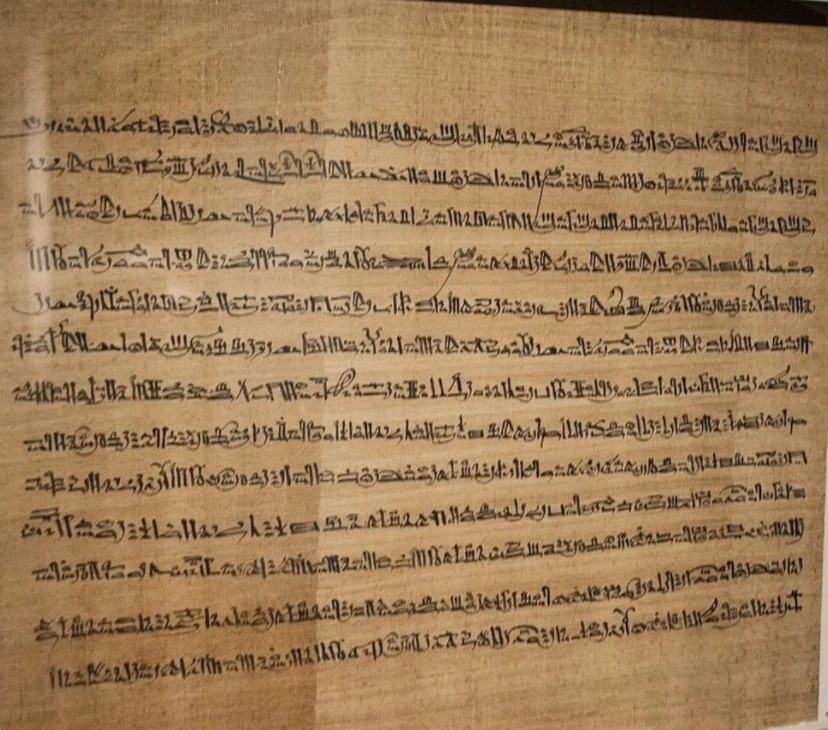
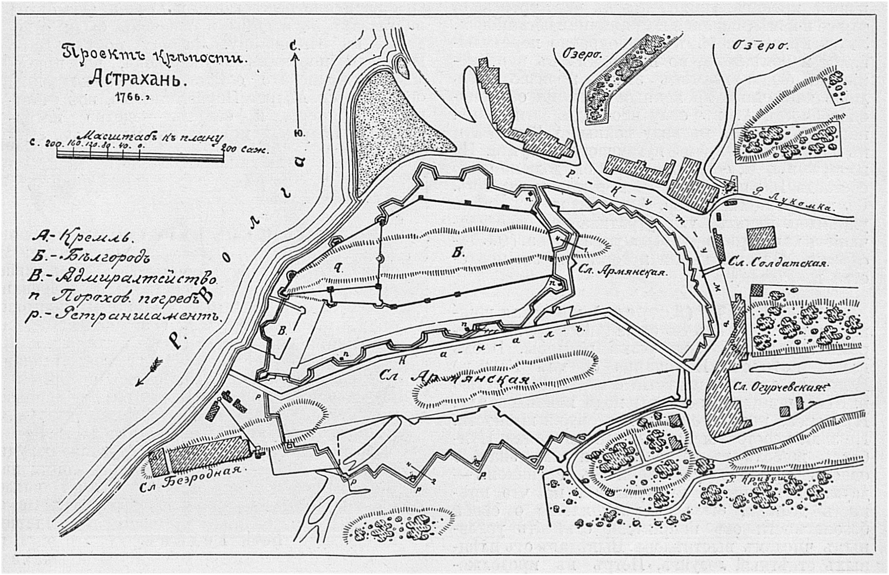
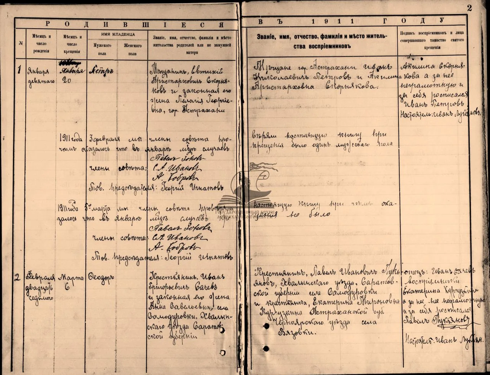
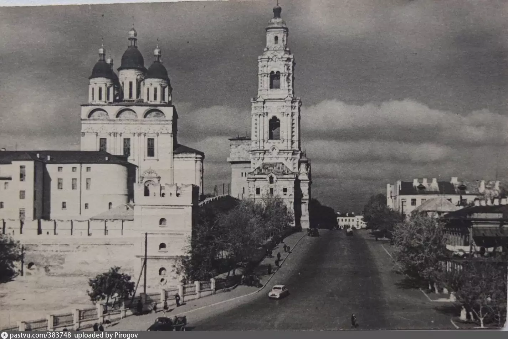

АСТРАХАНСКИЙ
ГОСУДАРСТВЕННЫЙ
АРХИВ
Астраханский Государственный Архив — хранитель исторической памяти, свидетель времени и опора для будущих поколений.
ОБ АРХИВЕ →Обеспечение надежного и бережного хранения документального наследия.
Предоставление документов для исследовательской, научной и иной деятельности.
Пополнение архивного фонда новыми документами из различных источников.
Создание цифровых копий и электронных архивов для удобного доступа.



